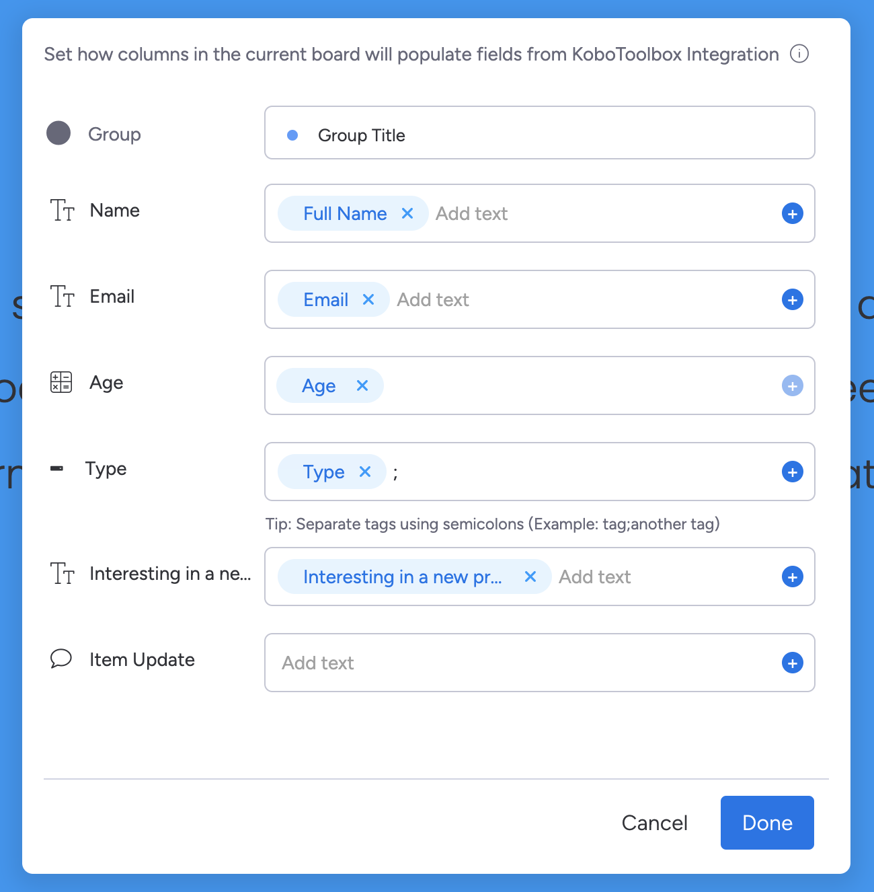
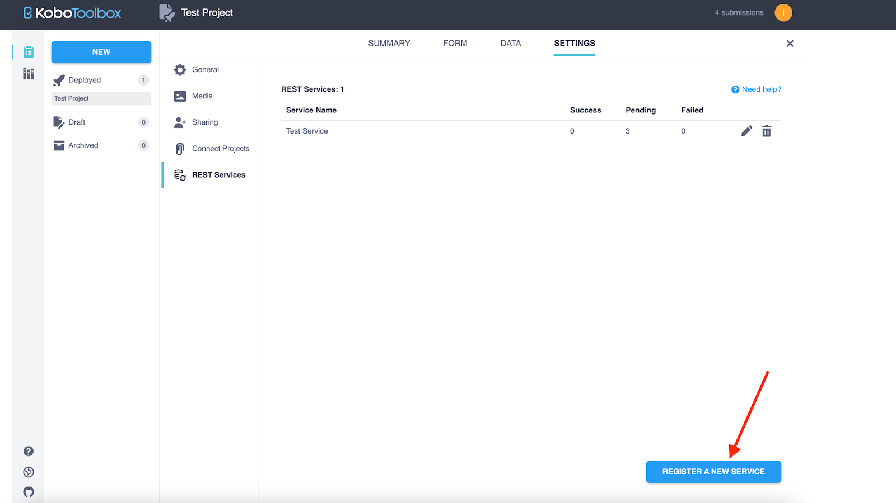

Search the knowledge base, browse our resources, and visit our forum for more detailed information
Última actualización: 3 de mayo de 2024
Este artículo describe el lanzamiento inicial de la integración entre KoboToolbox y Monday.com. Como con cualquier nuevo lanzamiento, puede haber algunos errores inesperados. Si encuentras problemas, por favor contáctanos inmediatamente para que podamos resolverlos. ⚠️ Recomendamos realizar pruebas rigurosas antes de implementar esta integración para proyectos de misión crítica. ⚠️
La integración de KoboToolbox permite a los/as usuarios/as sincronizar fácilmente los datos de su proyecto desde un proyecto de KoboToolbox a un tablero de monday.com.
En solo unos pocos pasos puedes configurar la integración para copiar automáticamente los envíos de datos recibidos en KoboToolbox a cualquiera de tus tableros de monday.com. Esta integración reduce significativamente el trabajo manual involucrado en copiar y pegar datos del proyecto desde KoboToolbox a monday.com.
Proceso simplificado de conexión de proyectos de KoboToolbox con tableros de monday.com.
Mapeo fácil de campos de monday.com a preguntas de KoboToolbox usando cualquier idioma de etiqueta definido en el formulario.
Sincronización en tiempo real de envíos recién creados para crear nuevos elementos.
Crea una cuenta en KoboToolbox si aún no tienes una. Aprende más sobre crear una cuenta.
Prepara un tablero de monday.com que refleje la estructura de tu proyecto de KoboToolbox para que todos los campos de tu proyecto de KoboToolbox estén representados en un tablero de monday.com.
Durante la configuración de la integración, necesitarás autenticar el acceso a tu cuenta proporcionando tu clave API de KoboToolbox. Aprende cómo obtener tu Clave API.
**Nota:** La Clave API es un identificador único utilizado para la autenticación. En KoboToolbox, se denomina tu **Clave API**. En monday.com, se denomina tu **token API**.
Instala la integración de KoboToolbox desde el mercado de aplicaciones de monday.com.
Una vez instalada, ve a tu tablero previamente preparado para configurar la integración.
**Nota 1:** Solo se puede establecer una receta de integración de KoboToolbox por tablero de monday. **Nota 2:** Solo la persona que instaló la receta puede editarla, todos/as los/as demás miembros/as del tablero solo pueden abrirla en modo de solo lectura.
Ve al menú Integration en la parte superior derecha.
Encuentra KoboToolbox en el Centro de Integraciones.
Haz clic en la integración de KoboToolbox y elige la receta incluida.
Autoriza la aplicación de KoboToolbox:
Ingresa la URL del servidor de KoboToolbox donde creaste tu cuenta. Para el Servidor Global, usa la URL del servidor https://kf.kobotoolbox.org. Para el Servidor con sede en la Unión Europea, usa la URL del servidor https://eu.kobotoolbox.org.
Ingresa tu Clave API de KoboToolbox en el campo «Kobo API token»
**Nota:** Para cambiar la Clave API después de que la receta de integración esté configurada, la aplicación de integración de KoboToolbox debe reinstalarse completamente.
Para la configuración de la receta, configura los siguientes parámetros:
Elige el proyecto de KoboToolbox apropiado que deseas conectar a tu tablero de monday.com desde el menú desplegable. Solo los proyectos desplegados están disponibles para selección.
Elige el idioma de etiqueta desde el menú desplegable. Si tu formulario contiene más de un idioma, selecciona el idioma que debe usarse para mapear preguntas a columnas. El idioma seleccionado solo se mostrará para mapear preguntas de KoboToolbox con columnas de monday.com. Los datos mostrados en el tablero de monday.com siempre usarán la estructura de datos XML subyacente en lugar de las etiquetas traducidas de Seleccionar Uno o Seleccionar Múltiple.
Haz clic en Item para configurar el mapeo de preguntas a columnas. 
Cuando hayas completado la configuración de la receta, haz clic en el botón Add to Board.
Después de completar la configuración de la integración, debes configurar los Servicios REST en KoboToolbox para sincronizar automáticamente los datos de tu proyecto con el tablero de monday.com. Para configurar los Servicios REST en KoboToolbox:
Copia el enlace de integración de la notificación de configuración de integración o de la
descripción en tu tablero de monday.com.
Inicia sesión en tu cuenta de KoboToolbox.
Ve al proyecto que deseas conectar. Abre la ventana SETTINGS, luego elige REST
Services, y haz clic en el botón REGISTER A NEW SERVICE.

Ingresa «monday.com integration» como el nombre del servicio e ingresa el enlace de integración en el campo «Endpoint URL».
En la sección «Custom HTTP Headers», inserta el valor «webhook-auth» en
el campo «Name» e ingresa tu Clave API de KoboToolbox en el campo «Value».
Haz clic en el botón SAVE.
¡Todo listo! Cada nuevo envío a tu proyecto de KoboToolbox se agregará automáticamente a tu tablero de monday.com según la configuración de tu receta.\
Notas importantes
Cualquier actualización realizada a un formulario o envío individual en un proyecto de KoboToolbox que ya se haya agregado a tu tablero de monday.com no se actualizará automáticamente en tu tablero de monday.com. Cambios como eliminar o renombrar una pregunta, cambiar una jerarquía de grupo, cambiar un grupo a un grupo repetido, o editar etiquetas en el formulario de KoboToolbox no afectarán los elementos en tu tablero de monday.com.
La ubicación no es compatible automáticamente en el mapeo de campos dinámicos. Para transferir una ubicación o coordenadas desde Kobotoolbox a una columna de monday.com:
Crea dos columnas en tu tablero de monday.com para que se completen los datos de ubicación: una columna que sea de tipo Texto y una segunda columna que sea de tipo Ubicación. Es importante nombrarlas de manera idéntica.
En el mapeo de campos dinámicos, mapea la ubicación de KoboToolbox a la columna de tipo Texto de monday.com.
La columna de tipo Ubicación no aparecerá en el mapeo dinámico.
El envío de ubicación de KoboToolbox se completará automáticamente en la columna de tipo Ubicación de monday.com.
La columna de archivo no es compatible automáticamente en el mapeo de campos dinámicos. Para transferir archivos desde KoboToolbox a monday.com:
Agrega una columna de Archivo al tablero de monday.com y dale el mismo nombre que el nombre usado para el campo de Archivo en tu proyecto de KoboToolbox. Debe usarse el mismo nombre de columna de archivo tanto en monday.com como en KoboToolbox.
Si no has instalado la receta de integración, completa el proceso de instalación. Una vez que hayas completado la instalación, ve al Centro de Integraciones, abre la receta existente y haz clic en el botón Update automation para que se apliquen los últimos cambios funcionales.
No se necesitan otros cambios de configuración. Los archivos ahora se transferirán automáticamente desde el proyecto de KoboToolbox a la columna apropiada en tu tablero de monday.com según el nombre de la columna.
Para garantizar un alto rendimiento en los tableros de monday.com, monday.com limita el número de columnas por tablero: 200 columnas para cuentas no empresariales y 300 columnas para cuentas empresariales.
¿Qué son los Servicios REST?
Más información sobre los Servicios REST está disponible en este artículo de ayuda.
¿Qué es el mapeo de campos dinámicos?
El mapeo de campos dinámicos es un emparejamiento de campos representados en el tablero de monday.com con las preguntas apropiadas del proyecto de KoboToolbox.
¿Qué sucede si cambio mis datos en la cuenta de Kobo?
Cualquier actualización realizada a un formulario o envío individual en tu proyecto de KoboToolbox que ya se haya enviado al tablero de monday.com no se sincronizará automáticamente.
¿Qué sucede si cambio mis datos en el tablero de monday.com?
Los cambios realizados a los datos representados en el tablero de monday.com no se reflejarán en el proyecto de KoboToolbox.
¿Qué sucede si necesito cambiar el idioma más tarde?
La selección de idioma afecta solo la vista de mapeo de campos dinámicos de la configuración de la receta de integración. Los datos del tablero no se traducirán.
¿Qué sucede si elimino el proyecto en KoboToolbox?
Si se elimina un proyecto en KoboToolbox, la integración ya no funcionará hasta que la receta de integración se actualice con un nuevo proyecto.
¿Qué son los «tipos de columna»?
Un «tipo de columna» en monday.com es un tipo de pregunta en KoboToolbox.
¿Qué tipos de preguntas de KoboToolbox se pueden transferir a monday.com?
Todos los tipos de preguntas excepto XML Externo son compatibles con monday.com. Si no puedes encontrar el tipo de columna apropiado en el tablero de monday.com, usa una columna de tipo Texto.
Para transferir los tipos de preguntas Punto y Área en KoboToolbox al tipo de columna Ubicación en el tablero de monday.com, usa el enfoque descrito en Nota importante #2. Si no es crucial tener datos transferidos a la columna Ubicación, entonces se puede usar una sola columna de tipo Texto sin adiciones.
¿Cómo se transfieren las preguntas de Seleccionar Múltiple en KoboToolbox a monday.com?
Para las preguntas de Seleccionar Múltiple, se debe usar una columna de tipo Desplegable en el tablero de monday.com para que todas las opciones seleccionadas se transfieran correctamente al tablero.
¿Cómo se transfieren las preguntas de Seleccionar Uno en KoboToolbox a monday.com?
Para las preguntas de Seleccionar Uno, usa una columna de tipo Estado (limitado a 40 opciones de etiqueta), Desplegable o Texto para que la opción seleccionada se transfiera correctamente al tablero.
¿Puedo sincronizar más de un proyecto de KoboToolbox con mi tablero de monday?
No. Solo se puede establecer una receta de integración de KoboToolbox por tablero. Tener más de una receta generará un error del servidor.
¿Por qué no puedo cambiar una receta creada por otro/a miembro/a del tablero de monday.com?
Solo el/la miembro/a del tablero que creó la receta puede editarla. Todos/as los/as demás miembros/as del tablero solo pueden abrirla en modo de solo lectura.
Did you find what you were looking for? Was the information clear? Was anything missing?
Share your feedback to help us improve this article!
KoboToolbox is maintained by Kobo Inc.